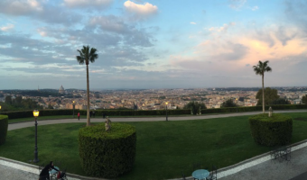
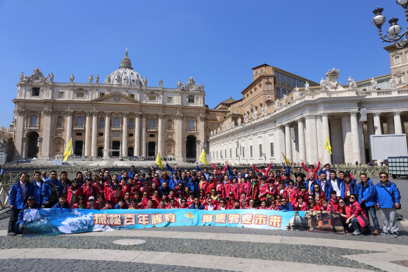
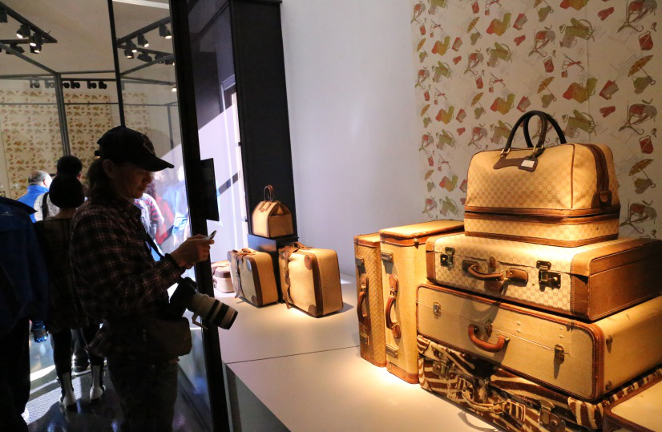
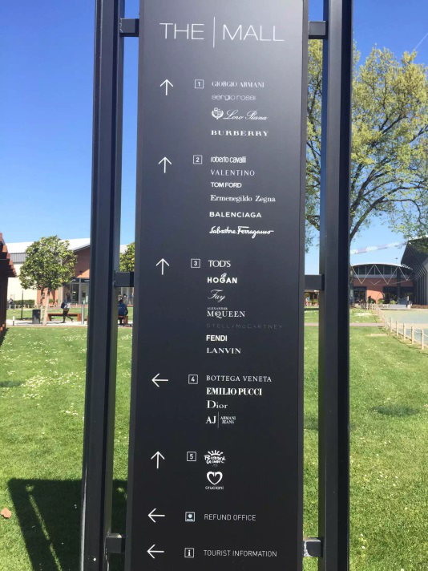
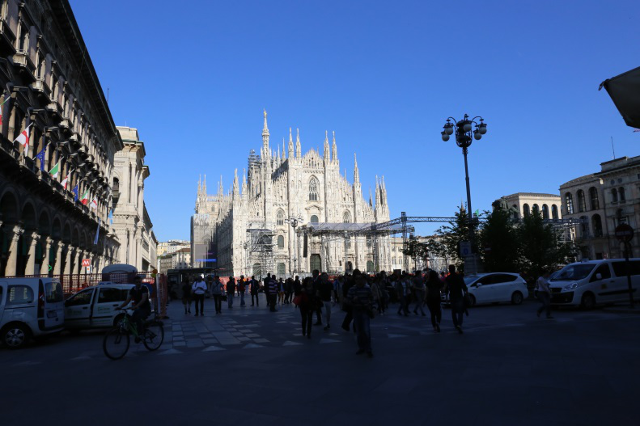
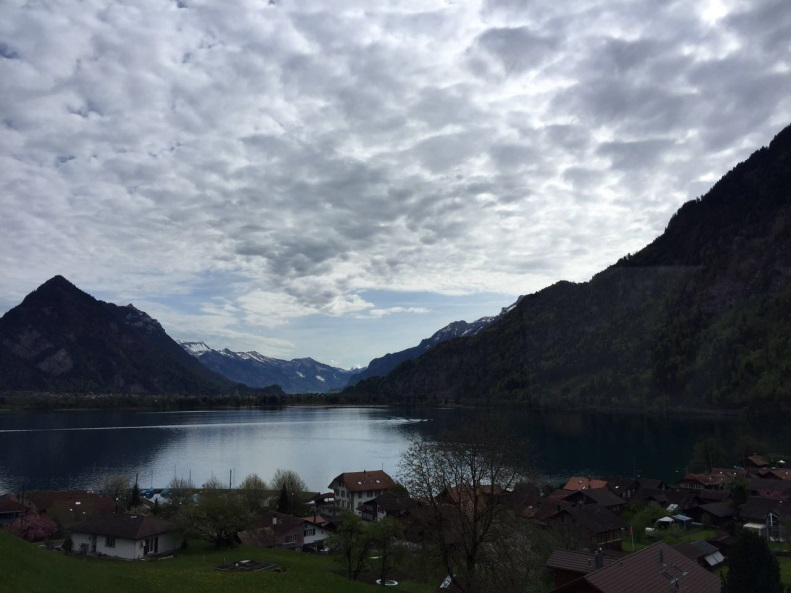
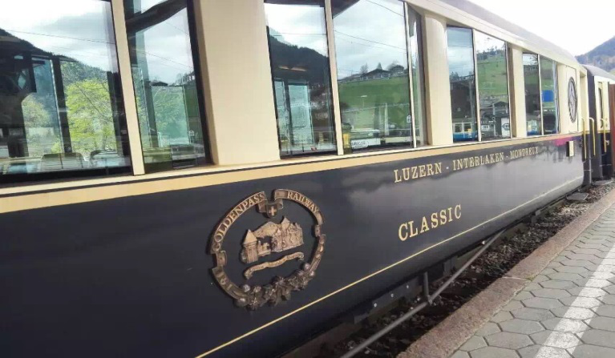
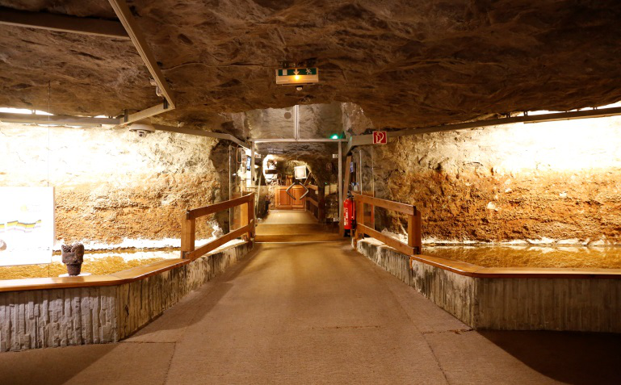
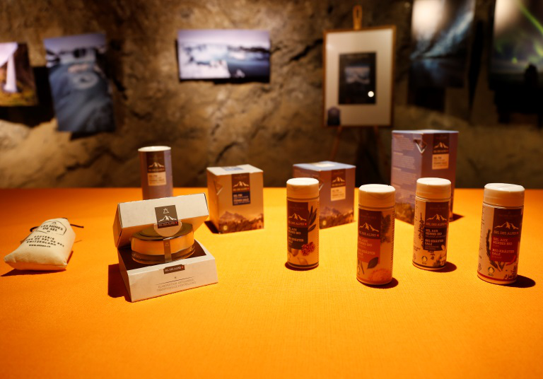
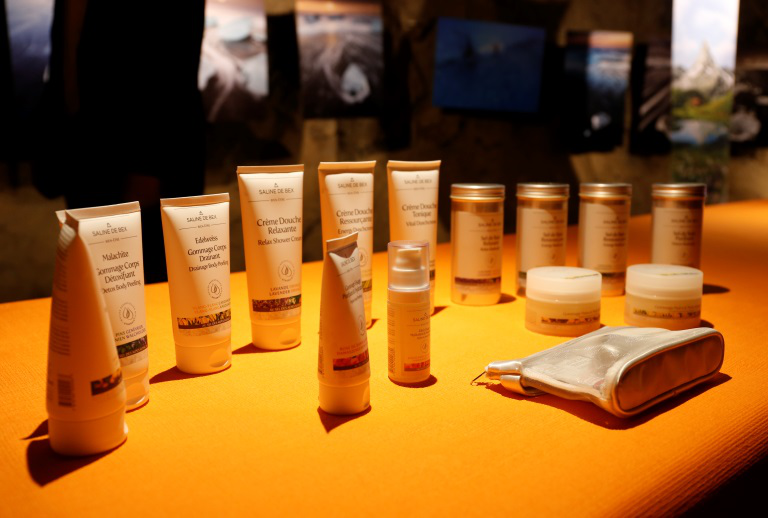

在互联网与国内经济发展影响下，我国消费者海外购物的需求日益增强，国家政策力挺跨境电商，近年国家与地方政府出台了针对跨境电商的监管政策与物流、支付等配套政策，极大的促进了跨境电商的发展。目前上海、杭州、宁波、郑州、重庆、广州与深圳7大城市具有跨境电商进口试点资格，与实体店和传统贸易进口商相比，跨境电商在经销、关税与物流成本上都能有所节省，在政策支持下，跨境电商的产品质量与售后服务也好过海外代购，未来发展前景大有潜力。
易麦通电子商务科技有限公司计划于今年8月重磅推出“足不出户购全球”品质全球海外购平台。2015年4月18日，罗麦科技集团副总裁白云、罗麦科技集团副总裁付洪宇、罗麦科技集团副总裁郑立宏、品质365海外购平台负责人全霖总监以及品质365工作人员、会员代表一行人于北京登机出发，赶赴欧洲，全面考察海外购平台未来供货渠道。
4月19日首先抵达迪拜转机，于晚间在罗马一处可俯视整个罗马帝国的平顶庄园落脚，罗麦家人举办欢迎晚宴，燃放礼花。4月20日一行人参观梵蒂冈大教堂、罗马斗兽场、圣天使堡、凯旋门、万神殿、西班牙广场等。4月21日驱车前往佛罗伦萨，途经圣母百花大教堂和市政厅广场，下午来到了GUCCI博物馆进行参观考察，22日马不停蹄滴前往托斯卡纳，参观了THE MALL奢侈品集中地购物天堂，于GUCCI餐厅享受午餐。




4月23日考察团前往米兰，游览米兰市区、多姆大教堂等处，入住米兰王子酒店。4月24日驱车前往瑞士因特拉肯，入住Victoria少女酒店。


4月25日，兵分两路。品质365海外购平台负责人全霖总监带领一队人马深入瑞士境内矿盐产地。4月26日考察团乘大巴到瑞士盐矿，坐小火车到达矿内，盐矿矿长介绍了盐矿的历史、由来以及天然形成过程。一行人兴致勃勃滴参观了矿内博物馆，了解了阿尔卑斯天然矿物盐开采过程，在世界著名的贝克斯盐矿地下餐厅品尝了当地特色美食，倾听了米其林御用食用盐的好处，就餐完毕坐小火车出矿购买纪念品，合影留念，回到入住处。




4月27日一行人参观积家表厂，积家表厂与百达翡丽等世界顶级表都是出自同一小镇，很有幸我们成为了这里的第一批考察者。积家博物馆里，放眼望去各种各样的机芯，各式各样的表款。进入工作间听专业的讲解员讲解制作流程，从齿轮，到安装，讲解了运动原理，也讲解了品牌概念，惊叹之后厂方拿出多款手表供大家欣赏认购，经典的翻转系列，以及陀飞轮等，各有特色，精美大方。从表厂离开又来到达日内瓦表行，进行认购。
另一行人开往了驱车前往法国边境小镇——依云小镇，去考察依云矿泉水的产地。 依云 (Evian) 是一个来自法国的有着悠久历史的品牌，依云(Evian) 这个的名字源自我们来到的这个法国阿尔卑斯山系的依云 (Evian) 小镇。经过多年的酝酿，2001年依云 (Evian) 推出了同品牌的化妆品系列，同样来自矿泉水的纯天然的化妆品系列。
27日晚，两队人马重新会和，举办欢送晚宴，准备踏上归途。
此次罗麦科技集团暨易麦通电子商务科技有限公司欧洲一行考察，为品质365电商平台和即将上线的品质全球平台发展提供了有力的渠道支持和保障。全球购需要稳固可靠的欧洲以及亚洲供货基地，考察之行得到的资源和情报将成为未来品质365海外购物平台规划和运营的宝贵指导资料。敬请期待今年易麦通品质全球全球购平台的上线运营！
2015年04月30日